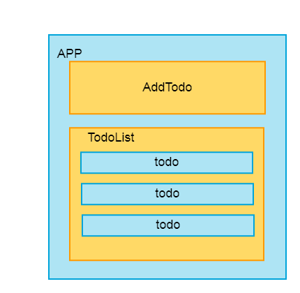
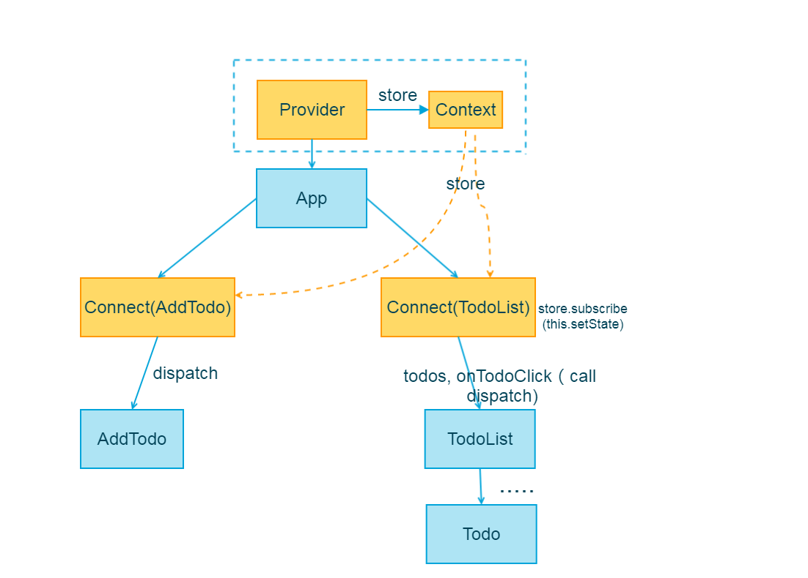
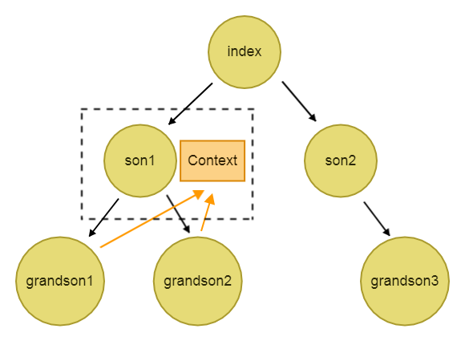

react-redux源码学习

版本4.x
声明：本文原创，如有雷同，别人抄我。
为什么需要 react-redux？
首先，Redux跟React是独立的，并没有直接的关系。Redux是一个单独的类Flux数据流管理框架，它并不只服务于React。
如果想用Redux来管理React开发中的数据流部分，则可以使用连接React与Redux的框架：redux-react，并提供了触发React UI树重新渲染的机制。
React如何响应store变化？
React其实跟Redux没有直接联系，Redux中dispatch触发store tree中state变化，并不会导致React重新渲染。
react-redux才是真正触发React重新渲染的模块。
react-redux提供了2个API：Provider和connect。
Provider是个组件，准确的说是个组件类，connect是高阶函数。
Provider在原应用上包裹这个原应用，接收Redux的store作为props，通过context对象传递给子孙组件；通过connect，对子组件进行包装，将store.state以及dispatch以props的形式注入。对于子组件componetA来说，当子组件componetA或者别的组件中dispatch(action)，触发state的改变，会触发Connect(componetA)组件中的render，重新渲染。
举例说明
ps:如果不理解，可以全篇读完再看。
在codepen上写了个简单的例子：地址
如图为例子的功能区域说明，APP中分为2个部分，通过操作AddTodo组件中可以在TodoList中添加Todo组件，返回点击todo可以改变todo组件中文字的样式。

首先画一下组件树：

如图中，通过Connect(addTodo)和Connect(addTodoList)可以取得在Provider中的store对象。
Connect(addTodo)和Connect(addTodoList)将相应的状态和事件传给子组件。可以看到组件Connect(addTodoList)中注册了subscribe(this.setState)(并不是直接注册，这里仅示意)，而Connect(addTodo)没有。原因主要是addTodo组件并不需要获取store.state，因此，当store.state发生改变时，该组件不需要直接重新渲染。
首先学习一下React的context。因为context是react-redux的核心。
有很多嵌套组件需要共享一个状态，这时，我们常常会通过props进行传递，父组件传给子组件，子组件再传给自身的子组件，逐级传递。这样显然太麻烦了，有没有办法让所有的组件共享一个状态？
React 的 context 就是这么一个东西，某个组件只要往自己的 context 里面放了一些状态，这个组件之下的所有子组件都直接访问这个状态而不需要通过中间组件的传递。
如下图，对于son1组件的的context，grandson1和grandson2可以直接访问到(子孙组件可以访问到)，但其他组件不行。

官方给出了使用context前后的例子。
MessageList组件原本想给Message中的button传递color状态时，需要通过props逐级传递，但是借助于context，可以在button组件中直接获取color状态。
使用前：
class Button extends React.Component {
render() {
return (
<button style={{background: this.props.color}}>
{this.props.children}
</button>
);
}
}
class Message extends React.Component {
render() {
return (
<div>
{this.props.text} <Button color={this.props.color}>Delete</Button>
</div>
);
}
}
class MessageList extends React.Component {
render() {
const color = "purple";
const children = this.props.messages.map((message) =>
<Message text={message.text} color={color} />
);
return <div>{children}</div>;
}
}
使用后：
const PropTypes = require('prop-types');
class Button extends React.Component {
render() {
return (
<button style={{background: this.context.color}}>
{this.props.children}
</button>
);
}
}
Button.contextTypes = {
color: PropTypes.string
};
class Message extends React.Component {
render() {
return (
<div>
{this.props.text} <Button>Delete</Button>
</div>
);
}
}
class MessageList extends React.Component {
getChildContext() {
return {color: "purple"};
}
render() {
const children = this.props.messages.map((message) =>
<Message text={message.text} />
);
return <div>{children}</div>;
}
}
MessageList.childContextTypes = {
color: PropTypes.string
};
核心API
react-redux目前暴露了Provider, connect2个函数。
Provider
主要做了2个工作
- 在原应用组件上包裹一层，使原来整个应用成为Provider的子组件
- 数据放在context中的store中，可以让connect()可以读到
子组件也可以直接通过context去读store，但是connect已经封装好各种功能了，因此也无需多此一举。
export default class Provider extends Component {
// getChildContext: 将store传递给子孙
getChildContext() {
return { store: this.store }
}
//取得属性store
constructor(props, context) {
super(props, context)
this.store = props.store
}
render() {
return Children.only(this.props.children)
}
}
if (process.env.NODE_ENV !== 'production') {
Provider.prototype.componentWillReceiveProps = function (nextProps) {
const { store } = this
const { store: nextStore } = nextProps
//store改变，则发出警告
if (store !== nextStore) {
warnAboutReceivingStore()
}
}
}
//对Provider的props和context类型做出规定
Provider.propTypes = {
store: storeShape.isRequired,
children: PropTypes.element.isRequired
}
Provider.childContextTypes = {
store: storeShape.isRequired
}
connect
使用： connect([mapStateToProps], [mapDispatchToProps], [mergeProps], [options])(WrappedComponent)
连接 React 组件与 Redux store。连接操作不会改变原来的组件类，而是进行包装。
state更新的数据流：
初始化（注册handleChange,再组件中导入dispatch）—->组件dispatch(action)—>触发handleChange—->触发setState—->render
整体架构如下（可以看到，整体结构是函数柯里化的结构）
export default function connect(mapStateToProps, mapDispatchToProps, mergeProps, options = {}) {
return function wrapWithConnect(WrappedComponent) {
class Connect extends Component {}
//把WrappedComponent的非React属性拷贝到Connect上。
return hoistStatics(Connect, WrappedComponent)
}
}
connect函数在返回wrapWithConnect函数前，进行了参数初始化，对mapStateToProps, mapDispatchToProps, mergeProps, options进行了操作。
const shouldSubscribe = Boolean(mapStateToProps)
const mapState = mapStateToProps || defaultMapStateToProps
let mapDispatch
if (typeof mapDispatchToProps === 'function') {
mapDispatch = mapDispatchToProps
} else if (!mapDispatchToProps) {
mapDispatch = defaultMapDispatchToProps
} else {
mapDispatch = wrapActionCreators(mapDispatchToProps)
}
const finalMergeProps = mergeProps || defaultMergeProps
const { pure = true, withRef = false } = options
const checkMergedEquals = pure && finalMergeProps !== defaultMergeProps
对于 wrapWithConnect 中的Connect类进行分析。
constructor构造函数
设置Connect类的state,后面将通过setState进行组件更新。
constructor(props, context) {
super(props, context)
this.version = version
this.store = props.store || context.store
invariant(this.store,
`Could not find "store" in either the context or ` +
`props of "${connectDisplayName}". ` +
`Either wrap the root component in a <Provider>, ` +
`or explicitly pass "store" as a prop to "${connectDisplayName}".`
)
const storeState = this.store.getState()
this.state = { storeState }
this.clearCache()
}
componentDidMount
条件合适，则注册handleChange。因此，执行store.dispatch(action),则handleChange就会执行。
//const shouldSubscribe = Boolean(mapStateToProps)
if (shouldSubscribe && !this.unsubscribe) {
this.unsubscribe = this.store.subscribe(this.handleChange.bind(this))
this.handleChange()
}
handleChange
一触发dispatch，则handleChange就会执行。如果state发生改变，则执行setState，就会触发render。
更新如下：
handleChange() {
//...
this.hasStoreStateChanged = true
this.setState({ storeState })
}
render函数
进行一系列对比与计算，确认this.renderedElement发生改变，则执行如下：
render() {
//.......
if (withRef) {
this.renderedElement = createElement(WrappedComponent, {
...this.mergedProps,
ref: 'wrappedInstance'
})
} else {
this.renderedElement = createElement(WrappedComponent,
this.mergedProps
)
}
return this.renderedElement
}
shouldComponentUpdate
shouldComponentUpdate返回false，之后的render不执行，返回true，render执行。
这里，会判断属性和状态是不是确实发生改变，改变了才会进行render。
shouldComponentUpdate() {
return !pure || this.haveOwnPropsChanged || this.hasStoreStateChanged
}